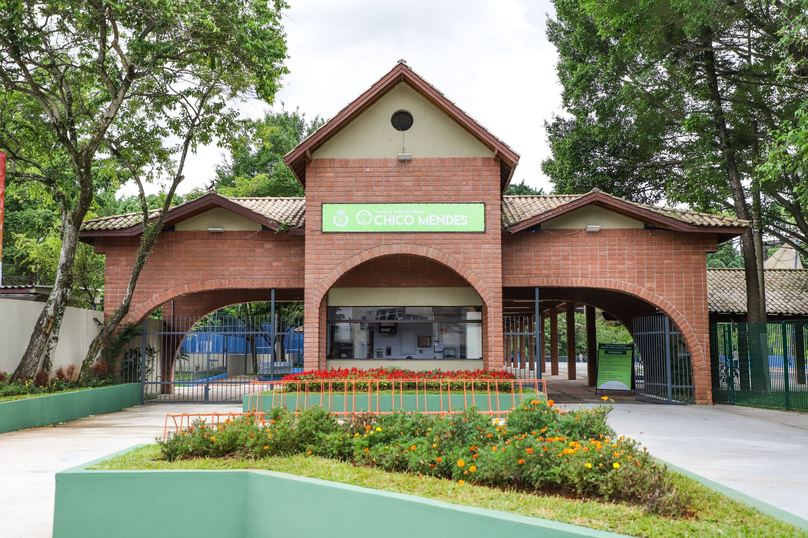
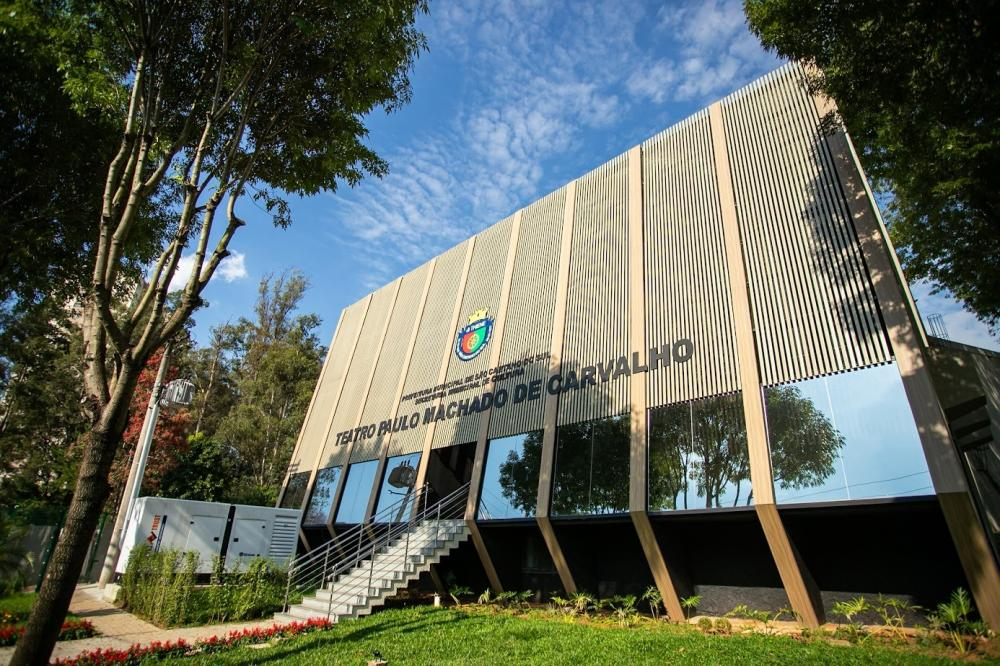
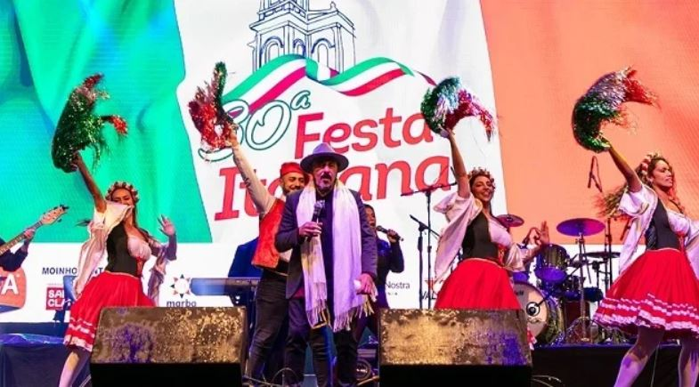
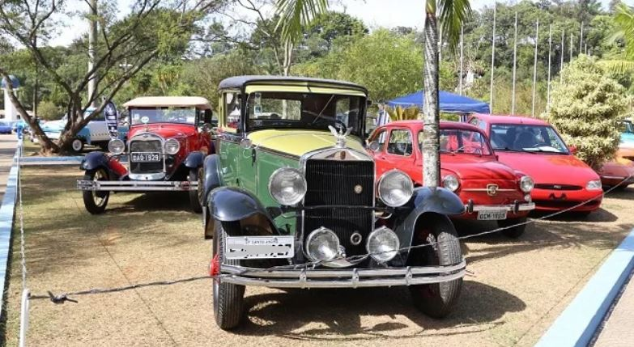
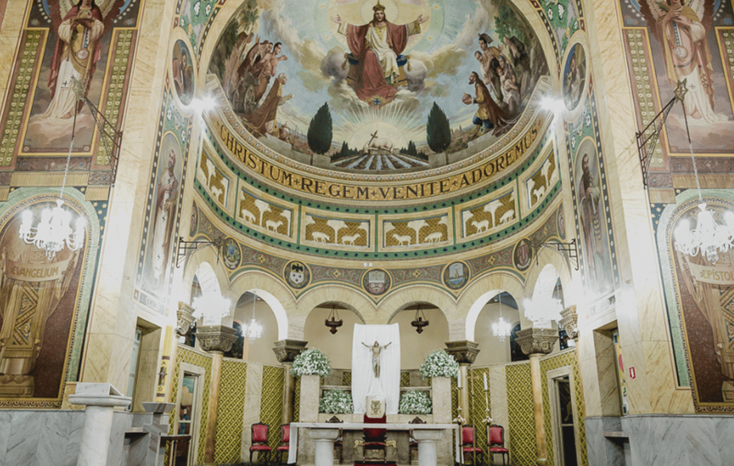
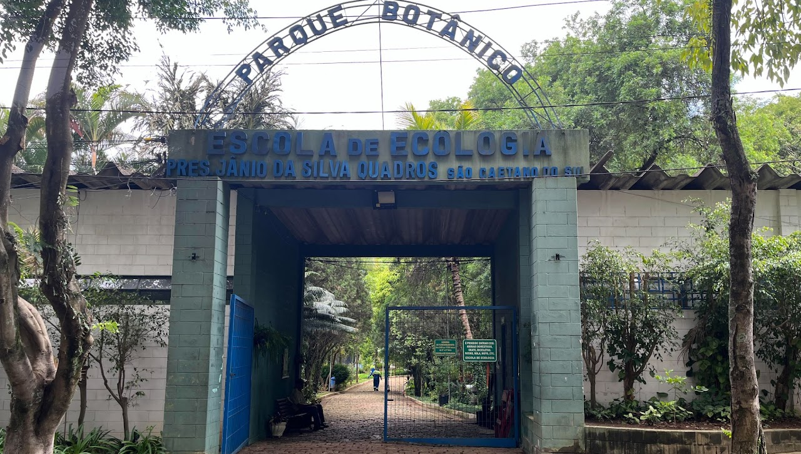

Cultura e Tradição:
• Igreja Matriz Sagrada Família
• Festa Italiana de São Caetano do Sul (Agosto)
• Exposição Anual de Carros Antigos (Julho)
• Pinacoteca Municipal (Exposições de artistas)
• Museu Histórico Municipal (Colonização Italiana)
• Teatro Paulo Machado de Carvalho
• Rádio Rock São Caetano
Esportes:
• Attack Paintball e Airsoft
• Estação São Caetano Beach Sports
• Sesc São Caetano
Parques e lazer ao ar livre:
• Espaço Verde Chico Mendes
• Parque Botânico e Escola de Ecologia Jânio Quadros
• Parque Linear Kennedy
Fonte: Cultura São Caetano
Vias de acesso Rodoviário:
• Rodovia Via Anchieta: SP-150
• Rodovia dos Imigrantes: SP-160
• Distâncias das cidades próximas:
- São Paulo (Capital): 11 km
- Santos (Baixada Santista): 65 km
- Santo André: 9,3 km
- São Bernardo do Campo: 16 km
- Ribeirão Pires: 42 km
- Rio Grande da Serra: 41 km
Vias de acesso Aéreo:
• Aeroporto Congonhas São Paulo: 15,9 km
• Aeroporto Cumbica Guarulhos (Internacional): 29,0 km
Vias de acesso Ferroviário:
Estação de trem "São Caetano do Sul" - Faz ligação com estações das cidades de São Paulo (Capital), Santo André, Mauá, Ribeirão Pires e Rio Grande da Serra.
Fonte: Turismo São Caetano

É o maior parque de São Caetano do Sul !!!
O local é ideal para atividades ao ar livre com extensa área verde, possui lago, trilhas, nascentes, playground para as crianças e espaço pet para os cães. Contém Pistas de cooper (cobertas e descobertas), sete quadras poliesportivas (futebol, basquete, vôlei e handebol) e mesas para jogos de tabuleiro e pingue-pongue.
Avenida Fernando Simonsen, 566, Bairro Cerâmica
Horário: 6h às 22h
Espaço Verde Chico Mendes

É o maior Teatro de São Caetano do Sul !!!
Com capacidade para 1.100 espectadores, o Teatro Municipal Paulo Machado de Carvalho recebeu revitalização completa, com substituição da estrutura de cobertura, instalação de um novo sistema de climatização, modernização da iluminação cênica, adequações de acessibilidade (PCD), conforto e segurança.
Alameda Conde de Porto Alegre, 840, Bairro Santa Maria
Horário: Ver programação de cada espetáculo
Teatro São Caetano

É a maior festa temática do ABC Paulista !!!
Ocorre tradicionalmente nos finais de semana de agosto e reúne cerca de 22 barracas com gastronomia típica, como macarronada, nhoque, pizzas, risotos, porções de polenta, frango frito, além de doces italianos e muito vinho. No Palco temos apresentações de bandas da comunidade italiana e artistas clássicos da música romântica como Fred Rovella, Tony Angeli e danças tradicionais italianas. OBS: ABC Paulista são as três cidades: Santo André, São Bernardo do Campo e São Caetano do Sul.
Praça Comendador Ermelino Matarazzo, 83, Bairro Fundação
Horário: 18h às 22h (confirmar a programação)
Festa Italiana São Caetano

É o maior encontro de veículos clássicos do ABC Paulista !!!
Oevento reúne centenas de veículos antigos com uma ampla infraestrutura de lazer e segurança para toda a família, dentro do Espaço Verde Chico Mendes. A exposição de raridades contém centenas de clássicos, antigos e customizados de colecionadores. Possui vendas de peças raras, miniaturas, antiguidades e itens de coleção. Gastronomia com ampla praça de alimentação com diversos food trucks e também apresentações de bandas e shows ao vivo.
Avenida Fernando Simonsen, 566, Bairro Cerâmica
Horário: 9h às 21h (confirmar a programação)
Carros antigos São Caetano

É a maior e mais antiga igreja da cidade !!!
Este templo é o principal marco religioso e histórico da cidade. A construção remonta à fundação e consolidação da fé pelos primeiros imigrantes italianos na região, com uma arquitetura imponente, fachada grandiosa e uma entrada central muito bem conservada, oferecendo um ambiente silencioso e acolhedor para orações. O templo realiza missas diárias, além de eventos tradicionais como a famosa Festa Junina da Matriz e o Terço dos Homens.
Praça Cardeal Arcoverde, 100, Centro
Horário: 5h às 20h (confirmar a programação)
Igreja Sagrada Família São Caetano

É o maior centro educacional ambiental da cidade !!!
Suas principais atrações incluem estufas de plantas tropicais, canteiros temáticos com plantas medicinais, ornamentais, suculentas, cactáceas e curiosas plantas carnívoras. Realiza a produção de mudas que abastecem a cidade. O espaço também abriga um lago artificial e animais como coelhos, pavões e faisões. Possui um Centro Educacional com foco em oficinas de reciclagem e preservação ambiental, em uma área totalmente arborizada.
Rua da Paz, 10, Bairro Mauá
Horário: 8h às 17h
Parque Botânico São Caetano